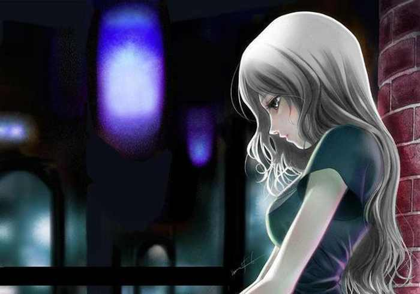

Mew Forest: Двое по волнам

Жанр: лирика (проза)
О произведении: С горчинкой и тёплым ветром от Мью Фореста. Посвящается выдуманной девушке.
18 января, 1986 года, заснеженная Финляндия. Метель, снег слепит глаза, вокруг всё кажется бесконечной белой пустыней. Только одна холодная белая гладь и ничего живого. В такую погоду я и приехал сюда.
Моя семья эмигрировала из СССР в 1953 году во Францию, это красивое место, но это ничто по сравнению с моим домом, хотя, его я видел лишь по старым фотографиям, бережно сохранёнными моей мамой. А сейчас… сейчас вроде бы «потеплело», к власти пришёл Горбачёв. Но мои родители не захотели возвращаться в Россию, они всё ещё боялись, что и их и меня расстреляют, хотя мне как-то в это не верилось, ведь что мы плохого сделали? Но мать и отец оставались при своём мнении, и тогда мы направились жить в северную часть Финляндии.
Зачем мы туда поехали - сложный вопрос, мы поехали туда больше из-за папы, он родился в Архангельске (город на севере России) и его очень тянуло в места с суровым снежным климатом, как на его родине, наверное, также как и меня, в СССР, в этом мы были очень похожи.
…
Мы ехали уже по Финляндии, на поезде, старом, но чистом, вокруг непонятные люди говорили на непонятном языке и также непонятно улыбались, когда видели, что я на них удивлённо смотрю. О чём они говорят? Может они послы, и обсуждают какие-то сложные межнациональные проблемы? А может быть это просто фермеры и разговор у них, про то, выйдет ли этот год урожайным? А может… но мои мысли прервала мама.
- Смотри, какой красивый пейзаж… Скоро здесь мы будем жить!
За окном была лишь снежная пурга, ровные поля и еле видневшиеся вдалеке леса – это всё что можно было разглядеть сквозь запотевшее стекло.
- Да, красиво! – ответил я и про себя добавил. – «Но дома лучше, во Франции… А может и в Союзе? Хотя, кто знает... Не нужно верить предчувствиям.»
Поезд прибыл в Хельсинки ровно по расписанию, несмотря на погоду. Снежная буря притихла, и на улицы города стало выходить всё больше и больше народа. Те, что постарше были одеты достаточно скромно, а вот большинство подростков одевалось в белую, тогда считавшуюся модной, одежду. Всё вокруг выглядело как-то чисто и опрятно, но для нас, не время было разглядывать прохожих, мы торопились в гостиницу, наше временное жилище.
- Hei! Auttaa? (Здравствуйте! Вам чем-нибудь помочь? – фин.) – обратился вежливо старенький служащий гостиницы, в которую мы буквально ввалились с улицы.
- Можно по-русски? Я бы хотела занять у вас гостиничный номер на трёх человек, со всеми удобствами. И не дорого… - мама выдержала небольшую паузу, - если можно…
- Да, по русски я могу говорит. У мэня мать из Совэтского Союза. – Улыбнулся служащий, - А нэдорого это сколко?
- Ну, марок так 40 в день
- Ой, извиныте у нас толко пьэтьдясьят пять марок минимум – служащий развёл руками, он был одет в чистый недавно постиранный бардовый костюм. - Но я могу сдэлать скидка до сорака марок… Ну? Соглашатесь! Это очэнь дажэ дёшэво!
Мать вопросительно взглянула на отца, тот кивнул и сказал вполголоса: «Только на один день».
Мама достала большой кожаный кошелёк с деньгами и вытащила оттуда франки.
- Франками принимаете? Просто мы поздно приехали и не успели поменять деньги.
Продавец вздохнул. Потом посмотрел на деньги, на измождённых путников, на часы и, взмахнув рукой сказал:
- Эх, была нэ бэла, завтра обмэняйу сам! – и взяв, подаваемые ему деньги, положил в специальный ящик. – Вам помочь? У вас тажёлый багашь?
- Нет спасибо, у нас не такие уж и тяжёлые сумки, - ответила мама, еле сдерживая улыбку. – Тем более у нас есть уже помощник! – она выдвинула меня вперёд, я нехотя сделал шаг.
- О! Это ужэ настоячий мужчина! – сказал улыбаясь фин, мне тогда было 15 лет. – Я, Ильмари, – сказал он, подавая мне свою рабочую, но в то же время старческую, всю в мозолях, руку.
- Приятно познакомится, я Дмитрий – сказал я и пожал руку старику.
Нас поместили в очень даже неплохой гостинице, был телевизор, были все удобства, даже душ, однако для мамы с папой это было дороговато и завтра они планировали выбрать другую гостиницу, если бы не одно обстоятельство.
На часах было уже где-то 10 часов вечера и уже пора было спать, но я уговорил маму на небольшую прогулку по улицам заснеженного города Хельсинки. К нашему удивлению, даже после метели город был чист и опрятен. Большие жёлтые фонари тускло освещали путь, будто горящие китайские фонарики, крепко вонзённые в снег.
- До того столба и обратно, хорошо? – предложил я маме, она не в силах была отказать.
Я помню её лицо тогда, ей не хотелось этого делать, но она шла, преодолевая своё желание, скрывала это улыбкой, хоть и очень устала после долгой поездки. Я знал это, но не замечал, я думал: «Впереди столько времени, что я обязательно успею и пожалеть и обнять свою мать и отца, и это же всего лишь несколько десятков метров, что они плохого могли сделать, нет, это просто дурные мысли, всё хорошо! Мы приехали в Финляндию, как говорит мама, «руки, ноги целы, значит всё хорошо», а сейчас… Ладно не буду думать о плохом, всё хорошо.»
Я подбежал к последнему фонарю, вроде бы всё, можно идти обратно... Но вдруг впереди завиднелся силуэт бегущего человека, он бежал ко мне.
Немного присмотревшись, я увидел молодую девушку в белом, за ней бежал, судя по походке не очень трезвый мужчина, одетый в лохмотья, держа какой-то небольшой предмет, похожий на пистолет, в руках. Девушка пробежала мимо меня, по направлению к моей матери.
- Извините, у вас можно укрыться, - обратилась она к маме, ещё не отдышавшись, - Просто там… - она показала, на тёмную мужскую фигуру человека вдали. – За мной бегут…
Мама вгляделась и увидела вдали бегущего человека.
- Хорошо дитя моё, не переживай, пойдём, - сказала она ей, и закричала мне, - Давай быстрей домой! Живо!
Но я стоял как вкопанный и смотрел на приближающегося человека ко мне.
И вот передо мной уже стоял подвыпивший человек, лет тридцати пяти. В руках он держал что-то вроде небольшого револьвера. Мама закричала громче и настойчивее, но я сделал вид, что не слышу её.
- Слушай брат, ты знаешь русский? – обратился пьяный ко мне.
Как будто бы холодок пробежался по телу.
- Да знаю… - не своим голосом ответил я и, не смея двинуться с места, взглянул на пистолет незнакомца, да, мне не показалось.
- А ты тогда не видел, пробегала ли тут девушка, ну она просто… - прохожий как-то хищно улыбнулся, - просто мне нужно с ней поговорить…
- Ннет… не видел. – сказал отрывисто я и, очнувшись, сказал, немного нервничая, - Вы знаете, мне пора домой.
Я искоса взглянул на маму, она стояла в дверях, уже без девочки. Из двери резко выбежал отец и быстро подбежал ко мне. Незнакомец испугался.
- Кто вы и что вам нужно от моего сына? – грозно спросил отец, мужчина с большой рыжей бородой.
- Мне? Я просто ищу одного че... адрес дома моих друзей, - он немного потупил взор и продолжил, - Но ваш сын, как я понимаю не туташний.
Это была явная ложь, отец сразу заметил, как незнакомец при его появлении, быстро засунул револьвер под свою одежду.
- Да, но я бы попросил не подходить впредь к моему сыну, идите, куда вы шли, - грубо сказал папа.
Я впервые его таким вижу, обычно сидит и пишет какие-нибудь бумаги, а тут он прямо встал на мою защиту.
Папа обнял меня и мы пошли домой.
- Какой-то странный человек! – ухмыльнулся отец.
Я просто кивнул головой, мои мысли уже были про ту девушку: кто она, откуда она, знает ли русский, и что она делала в такое время суток на улице.
Мы зашли в гостиницу, девушка сидела на скамейке в рецепшене, теперь я мог её разглядеть подробнее. Это была молодая девушка лет, как я впоследствии узнал, шестнадцати, с голубыми, но погаснувшими, от жизни, глазами. Блондинистые волосы, скомканные и потухшие, лежали на её милом лице.
- Он ушёл? – спросила она сухо.
- Да, - сказал я и присел на стул рядом, - А кто это?
- Мой приёмный «отец» - сказала она и горько усмехнулась, прикрыв лицо грязными руками, - Мои родители умерли… - она всхлипнула, но слёз не было видно, - Потом меня забрали в детдом, потом я оттуда сбежала, потом поймали и… объявился этот…
Она замолчала. Я не знал, как можно было бы ей помочь, и можно было ли. Тишина так бы и продолжалась, если бы в холл не вышла бы мама.
- А давай ты у нас переночуешь, сейчас ведь просто поздно уже. А утром мы сообщим твоим родителям, что с тобой всё хорошо, - мама не обратила внимания на моё неодобрительное выражение лица, - как же они могли тебя выпустить в такое вре…
Мать не успела договорить, как девушка убрала руки со своего лица и, глядя прямо в глаза мамы, сказала – У меня нет родителей!
Лицо мамы резко изменилось и посерьёзнело.
- Ну тогда может… - она взглянула в глаза молодой девушки, которые с какой-то непреодолимой надеждой смотрели на неё. Мама отвела взгляд. – Ладно, поживи у нас несколько дней, а потом… посмотрим.
- Извинитэ! – встрял резко Ильмари, сидящий неподалёку, за ключами, - За неё отдэльно надо будэт платит! Она еду жэ ест! – служащий немного усмехнулся, - Как и каждий из нас!
Никто не понял его шутки, мама сухо ответила, что деньги будут, на этом всё.
Родители уложили её в отдельную комнату, я спал на полу. Есть она отказалась. За ужином никто не говорил, легли спать поздно.
...
Морозное зимнее утро. Вверху широкое бескрайнее синее небо; внизу - сугробы, поблёскивающего позолотой от солнца, снега. Ровные финские улицы с паром разрезают снег, создавая что-то вроде большой шахматной доски. В качестве фигур, дома, с чистыми окнами, все ровно покрашенные, непоколебимо стояли на своих местах. Наверное, эта «партия» развязана между городом и зимой, а люди просто безмолвные жертвы, свидетели, пешки этой войны.
Я встал рано, на старых советских часах «Чайка» было ровно 4 утра. На цыпочках, чтобы никто не услышал, я заглянул в дверную щель, проверить спит ли незнакомка, или у неё тоже безссоница. Но её там не было, вместо неё лежала записка:
«Не ищите, меня, я уехала в другой город, не буду вам мешать. Спасибо вам!»
Куда ей одной? Может она ещё не уехала?
Я по-быстрому оделся и спустился вниз. Может я её уговорю её не ехать в такую погоду.
- Здраствутэ! Ви кажэтса знаетэ русский? – сказал уже другой, более молодой гардеробщик, - С Добрим Утром!
- C добрым. – суетно ответил я, - А не знаете где здесь ближайший вокзал?
- О! Да нэ вопрос! Вон, видите верхний часть того большое здания? – служащий ткнул пальцем в окно.
- Ну да, - я всмотрелся в замёрзшее окно и разглядел черты, того здания, о котором говорил служащий.
- Это то, что вам нужно! – он не успел договорить, как я уже выбежал на улицу. Я бежал к вокзалу, надеясь, что она смогла живой дойти туда. Зачем я бежал? Наверное, просто человеческое сочувствие. После долгой счастливой жизни в центре Франции и, переехав в Финляндию, я впервые увидел несчастного человека, действительно несчастного. Раньше я жил лишь тёплыми воспоминаниям отца о Советском Союзе и мамиными хозяйскими рассуждениями. Я рос в тепличных условиях, даже в моём классе, самым несчастным был один парень, Станислас, у которого были разведены родители и часто конфликтовали, лишая его счастливого детства, но у него хоть и такое, но оно было, а у этой девушки не было и этого. Как можно жить без родителей? Без детства? Без семьи? Без всего? Но было и ещё кое-что, что отличало её от всех «несчастных» людей, которых я видел во Франции, я мог хоть как-то помочь ей.
Я сам не заметил, как ноги сами донесли до вокзала. Чистое опрятное здание кирпичного цвета стояло с открытыми стеклянными дверями, внутри ровно стояли покрашенные скамейки. Кажется, я разглядел на них её.
И действительно, там сидела та незнакомка, только уже с растрёпанными волосами, наверное, она тоже не спала сегодня ночью.
Увидев меня, её лицо сильно переменилось. Она была удивлена.
Я сел рядом.
- Я же написала, что не надо искать меня, - сказала она удивительно спокойно.
- Просто… зачем тебе ехать? Мои родители и были бы не против, думаю… - я не успел договорить, она перебила уже не так спокойно.
- Я знаю, они хорошие люди, но… - она не смогла так долго сдерживаться и взглянула мне в глаза, не нужно было ничего говорить, я всё увидел сразу. Её глаза как бы говорили: «Я столько боли испытала, что же вы хотите сделать? Помочь или причинить ещё большую боль? Вы честный человек? Кто вы? Что вам от меня нужно? Я могу вам довериться? Если можете, помогите мне, но я боюсь вас, простите…»
- Просто, - продолжила она после небольшого молчания, - Когда мне особо тяжело, я езжу к границе с Россией, там могилы моих родителей: Антеро и Аннели. Их пристрелили русские ошибочно, когда те… они не знали, что заплывут в Советский… - она заплакала. Я просто смотрел на неё, и мысленно уже гладил её по светлым локонам и, наверное, утешал бы, но я не знал, что делать, я просто смотрел.
Она вытерла слёзы и взглянула на меня, как будто бы ничего и не было. – Я туда езжу 23 сентября, каждый год, это годовщина их смерти.
- Сочувствую, - я больше не знал, что сказать и после небольшого молчания прибавил, - Может вам принести деньги? Ну для гостиницы или для еды? – чрезмерно резко и обрывисто сказал я.
- Нет спасибо, - отрезала она.
- Но мои родители не бедные, а я могу и сам эти деньги заработать…
- Нет, мне не нужно я так, - выражение в глазах изменилось, она немного улыбнулась, - Лучше скажите, как вас зовут?
- Меня? Дима – я не ожидал такого вопроса. – А вас?
- Меня Оливия! – она протянула мне свою руку, немного улыбаясь, - Приятно познакомится!
Я пожал ей руку. Мы поздоровались.
- А у тебя точно нет дома? – это был грубый и глупый вопрос, но я всё ещё не мог поверить в то, что такое бывает.
- Да. – она вздохнула, - Нет не семьи, ни денег, не жилья, ни еды. Это всё поправимо, мой дом – чистые улицы, моя еда… Хотя нет, это просто дурацкая надежда, что всё хорошо, просто бывает очень тяжело, особенно зимой… а надо мной смеются, все называют «шавкой», «бездомной шалавой», да как только… Одни жалеют, другие забрасывают камнями… А кто вокруг? Счастливые? Нет, но для них я всё равно «подзаборная пьянь», да кто они? Они знают меня? Иногда мне посылаются такие, как ты… хорошие люди. Ах, как хорошо, что мне родители мои помогают, они же живы… у Бога. А ты в Него веришь?
Это были, хоть и обрывистые, но очень неожиданно глубокие рассуждения для бездомного человека, хотя она же некоторое время была с родителями… Интересно она помнит их? А потом она училось в интернате? Наверное да, она же умеет писать, и очень даже красиво.
- Вообще… нет, - мне не хотелось врать, и я сказал правду, - Религию и Бога придумали люди, мой отец так говорил. Не думаю, что он ошибается…
- А сам? Сам как думаешь? – она вопросительно на меня посмотрела
- Ну нет, как-то не верится… - я очень глупо тогда выглядел, - А может всё таки дать деньги?
Она вздохнула, её взгляд сказал: «Как жаль, что я тебе открылась и даже ты меня не понимаешь!». Она отвернулась.
- Только если десять марок, мне на транспорт – холодно ответила она, смотря сквозь запотевшее окно на здание вокзала. – Пожалуйста…
- Хорошо! Только подожди, я быстро… - я мигом добежал до дома, взял 200 марок из кошелька мамы и быстро добежал до вокзала, но её там уже не было. Я ещё немного подождал. На часах, весящих на вокзале, было уже 7 утра. Всё. Теперь мы больше никогда не увидимся.
Я подавленным пришёл домой и целый день ничего не говорил никому, я был погружён в свои мысли.
- А где девочка? – наконец спросила мать, после долгого моего молчания за столом, - Куда она ушла?
- Ушла, - коротко сказал я.
- Куда? – спросила мама.
- Мам, отстань! Далеко! Она вообще уехала из города! – истерично сказал я. – И я не хочу есть.
Мама не ожидала этого от меня, она просто стояла с тарелкой в руках и удивлённо смотрел. Я ушёл в свою «комнату» и полностью погрузился в себя.
Дни летели быстро, мы уже переехали в съемную квартиру, а я все не мог её забыть, её слов.
«Во Франции я не то чтобы не видел несчастных людей, они просто были вдалеке, где-то там: без семьи и без дома – в интернатах, одинокие – в доме для престарелых, а калеки… А что на них обращать внимание? Жизнь прекрасна, радуйся, за себя, ты жив, ты силен, ты счастлив, что тебе до других, они пусть сами справляются. Не обращай на них внимание – не порть себе настроение! Думай о себе, о близких, о друзьях, зачем тебе остальные? Так думало большинство моих сверстников, так думал я, зачем как-то выделяться, если ты такой же как все. Но я приехал в Финляндию, и встретил Оливию, без дома, без семьи, но при этом она живёт, и добра к другим, ведь правда? «Думай сам», и действительно, разве я хочу быть этим равнодушным, думающем только о себе человеком? А ведь к этому стремится большинство, если я бы пошёл как все, куда бы я пришёл? К циничности и лжи. Хочу ли я этого? Нет. Некоторые не видят действительности, они прячутся, за кулисами лжи и обмана, обманывая в первую очередь себя.» - мои мысли были прерваны стуком в дверь, мама видно беспокоилась за меня.
Не прошло и дня, чтобы я не вспоминал её. Она мне всё-таки действительно нравилась…
Недалеко от дома стояла Финская библиотека, здание синего цвета с большими стеклянными окнами, в углу которой находилось несколько книг на русском языке. Это было несколько томов Карамзина «История Государства Российского», не было только второго. Несколько дней я читал эти книги. «Думай сам» - вертелось у меня в голове. «Может быть раньше не всё так было плохо. И действительно, «думай сам», тогда бы не расстреляли бы родителей Оливии и может быть она была бы счастлива… А я… Может быть был бы знаменитым меценатом (ведь у меня же дворянский род) и жил бы с Оливией…» Дальше фантазия меня занесла ещё дальше, но это смешивалось с горькой кислотой мысли, что я её больше не встречу. А что может случиться? Многое, без дома легко умереть.
Мне уже 16 лет, но ещё несколько дней назад я был наивным ребёнком, считающим, что всё хорошо, но теперь я превращался в совершенно нового взрослого человека. Начал подзарабатывать, как и все Финские подростки, мытьём окон, уборкой мусора. Все деньги, собранные мной от этих работ и те, которые давали мне родители, я отдавал в интернат, находившийся, в километрах дести от города. Я это делал сам и скрытно, слава мне нужна не была, моей целью было помочь таким несчастным, как и эта девушка, Оливия.
И однажды произошёл такой случай, это было летом, к папе приехал его друг из СССР и привёз целую пачку Советской «Правды» и после нескольких рюмок крепкого спиртного начали вести политические разговоры. Так получилось, что я находился вместе с ними в одной комнате.
- Я тебе говорю, Горбачёв разложит страну! – сказал друг, наливая себе ещё одну рюмку.
- Слушай, я историк! Я прочёл столько книг, что даже никому и не снилось! – отец торжественно взмахнул рукой, - И я полностью с тобой согласен! Он ещё та сволочь… Ну погоди! Наш Советский Союз не разрушишь! Вот в тридцатые его бы Ежов «причесал»! Эх как хорошо было… счастье! Ну сын, подтверди!, - он показал на меня рукой и прибавил, - Весь в меня, историком будет.
Я тут же вспомнил «Думай сам» и подумал, что бы я сказал, будь Оливия рядом, ах, если бы она была ещё жива!
- Пап я не согласен. – Лицо отца резко изменилось, я отвёл от него взгляд, - Страна уже и так прогнила изнутри, а сейчас он просто пытается спасти… - я немного запнулся, но продолжил, - Ведь чем сложнее система, тем она более уязвима, не правда ли?
- Ну это сейчас, - перебил меня друг папы, - А вот при Ленине…
- Я не соглашусь с вами, ведь, сколько людей погибло, ради чего? Счастливого будущего и поэтому сейчас так много сирот и…
- Это всё бредни, - выкрикнул отец с красным лицом, - Иди отсюда, ведь ты же тоже был со мной иди ка ты со своим бзиком несчастных людей! Тогда счастливы были все те, кто этого заслуживают!
- А как, по-твоему, дети? Они что, не заслуживают этого?
- Вон пошёл! – уже весь алый, крикнул отец, наверное, выпив уже третью рюмку водки.
- С удовольствием… - мне хотелось плакать, но я знал, что делаю всё правильно. Я рухнул на мягкую кровать и, укутавшись лицом в подушку заплакал: «Где же ты Оливия? Я сделал, как ты говорила, помоги мне…»
Я сам не заметил, как наступило 23 сентября, мы уже снимаем квартиру, я поступил в колледж Savonlinnan kristillinen opisto и уже знаю неплохо Финский язык, но, как и с Французским приоритет отдаю только русскому. Хотя… Это всё не столь важно, по сравнению с этой датой.
Я проснулся в 3:40, быстро собрал рюкзак, немного поел, родителям оставил записку.
Солнце слегка освещало макушки дальних зданий, на чистой улице веяло осенней прохладой, но надежда на умирающее лето всё ещё оставалась. На балконе одного из зданий художник уже рисует городской пейзаж, но мои мысли уже не здесь, я уже там, на границе с Россией.
И вот уже красивые первозданные леса проносятся за окном небольшого автобуса. «Жива ли ты или уже с ними? Может что случилось? Нет, этого не может быть, мы встретимся, и тогда я найду родственную душу.» - На этой мысли я улыбнулся. В автобусе уже сидел не ребёнок и не подросток, а взрослый человек с надеждой на лучшее будущее. Я вспомнил фразу президента Авраама Линкольна: «Пока хоть кто-то из нас не свободен, все из нас не свободны» и перефразировал её в свою: «Пока хоть кто-то из нас не счастлив, все из нас несчастны». Поэтому, даже после встречи, я должен буду помогать другим. Мы ведь увидимся?
Автобус доехал до конечной остановки. Впереди завиднелось вспаханное наполовину поле, покрытое туманом, далее густой лес, там граница, а дальше СССР. Будь я здесь год назад, я бы заплясал от радости, что я рядом со своей Родиной, но теперь я холодно смотрел вдаль чудовищу, похоронившему Российскую Империю (тогда я уже прочёл Карамзина). Я отвернулся и подошёл к водителю автобуса, на котором я сюда ехал:
- Не знаете, где здесь рядом может… захоронения, кладбище?
- En tied? ven?j?! (Я не знаю русский – фин.) – ответил он
- Oak. Ei tied? miss? hautausmaa on seuraavaksi? (Хорошо. Не знаете, где здесь рядом кладбище? – фин.) – спросил я по-Фински.
- Tuolla. (Вон там – фин.) – Фин показал на купол вдалеке, - Ei kaukana ortodoksinen kirkko. (Не далеко от того православного храма – фин.)
- Kiitos! (Спасибо! – фин.) - сказал я, интуитивно понимая, что водитель говорил о храме.
Я побежал, что есть сил к тем золотым куполам, на которые он указывал. А! Кажется, я вспомнил, что Оливия говорила мне что-то о Боге, что он ей помогает, хотя нет, я даже не знаю, в кого она верит, тем более Бог – это просто надежда и ничего более, хотя… Ладно, если я её встречу, мы обязательно на эту тему поговорим, а сейчас быстрее, может она уже ушла. Лишь где-то на подсознательном уровне у меня вертелось: «Только бы она была жива!».
Я дошёл до кладбища, оно было русским, рядом стоял небольшой храм и белая слегка покосившаяся колокольня. Огромное количество крестов и памятников, окружили со всех сторон, закружилась голова, но я собрал мысли в кулак и вспомнил имена её родителей, «Я должен их найти!» - сказал я себе.
Полу-рысцой я пробегал от одного памятника к другому, ища имена. Так я потратил два часа, в голове мутило, тошнота, как вдруг мне показалось… хотя нет стойте! Я нашёл этот памятник, он был выточен из мрамора, на нём большими буквами было написано «АНТЕРО И АННЕЛИ».
Я положил портфель на землю и, достав оттуда небольшую саперскую лопатку.
...
На моих часах, лежащих в портфеле, было уже 14:00, цветы были посажены, сорняки вырезаны, но никого не было. Я понимал, что нельзя ехать на кладбище только ради встречи с кем-то, но я так хотел её видеть.
Я задумался.
Не замёрзла ли она, в ту суровую зиму, где она, Я вспомнил, как, когда я отдавал деньги в интернат, искал её лицо среди всех остальных, но её там не было. Каждый день я глядел в окно и ждал пройдёт ли она вдруг мимо.
Я взглянул на памятник её родителей (на часах было уже 16:00).
А может ты… Ты же не могла… Но если ты умерла, то ты ведь с ними, правда? Ты сама говорила, у Бога все живы и он тебе помогает. Может он мне простит, Бог, я не знаю, кто ты и не знаю, как к тебе обращаться, но если ты существуешь, сделай так, чтобы она была жива, пожалуйста… Я лёг на колени, именно лёг и заплакал, повторяя «Пожалуйста! Пожалуйста Бог!». Я каялся, я божился, я умолял, но ничего не было, я сел на небольшой заборчик у могилы, весь в слезах и ждал…
- Извините, - раздался голос сзади.
Я обернулся. А! нет… Передо мной стояла старушка лет семидесяти, с костылём.
- Извините, - повторила она, - вы не могли бы дать свою лопаточку, на время? Просто я свою забыла дома!
- Ладно, хотя нет, давайте я вам сам всё сделаю. – сказал я и, привстав, взял рюкзак с лопатой, - Где вам помочь? – спросил я, а в душе говорил другой голос, голос Оливии: «Да, помогай другим, ты верно всё делаешь!»
- А, вот тут, сынок, - сказала старушка, да, это было не далеко от могилы родителей Оливии, если она придёт, то я увижу.
Я доделал всё до конца, на часах было уже 21:00, я дождался 22:30, когда отбывает последний автобус, и пошёл. Слёз уже не было, они все остались у того надгробного камня. Я ехал в автобусе один.
...
Я окончил 1 курс, завёл новых друзей, но не девушку, я навсегда останусь с той. Пусть даже её и нет, но она ведь точно есть, у Бога. Но я не был счастлив, я ждал её и помогал другим, каждый день читал Евангелие, наверное, она его тоже читала... Жаль, что я не могу всем помочь. Ведь «Пока хоть кто-то из нас не счастлив, все из нас несчастны».
Вот как много случилось, пока наступило 23 Сентября ещё раз. Я с четырёх часов утра сидел на могиле её родителей и читал Псалмы.
Раздался чей-то голос за спиной, секундная надежда, почти затухшая загорелась снова, но… Это была та же бабушка.
- Здравствуйте, - я слегка улыбнулся, казалось, встречаются два давно знакомых приятеля, - Я тогда помогу вам?
Бабушка одобрительно кивнула и, забыв, что я знаю русский, сказала, - Kiitos! (Спасибо! – фин.)
Я помог и ей и поработал у других соседних могил. К вечеру опять уехал. Всё то уже не нарывало, а просто ностальгически болело.
«Бог её примет,» - думал я, - «Точно примет, и она видит и мои злые и добрые поступки, а я должен помогать другим. Я не успел помочь ей, но я помогу другим, а значит, может быть, Бог смилостивится, и я может смогу попасть к ней… Там, она говорила, и её родители, а не в этой сырой земле…
Надо больше стараться помогать сиротам… а вдруг она жива? Но тогда может быть, Бог сведёт меня с ней в реальности? Или может, я больше пользы окажу ближним, будь я без неё, но стараясь для неё? Но мне так тяжело… Хотя нет, ей было тяжелее и тем, кому я ещё не помог. Пожалуйста, Оливия, если ты в раю, попроси Бога, чтобы Тот помог мне…»
...
Мне исполнилось восемнадцать, к счастью я не остался один, ко мне присоединились друзья по училищу, в котором я учился, это были Микаэль и Алекси. Мы втроём скидывались и покупали детские игрушки, еду, всё необходимое для детдомов, кроме одного – мы не могли им дать счастливую семью.
Однажды 22 сентября меня и моих друзей пригласили на праздничный вечер детдомовцев, там дети рисовали, веселились, пили лимонад, смеялись. Мы купили для них много игрушек. Все, в том числе Алекси, не любивший шумные праздники, растрогался. В общем, праздник прошёл хорошо, но мои друзья, да и воспитатели в детдоме заметили мою рассеянность, да, я думал о завтрашнем дне, что могу не успеть.
- Слушай, сейчас уже ночь, - сказал Микаэль, - мне, Алекси и тебе нужно поспать, завтра детский госпиталь в городе Лахти ждёт срочной помощи, там нет одного очень важного лекарства…
- Как?? – не своим голосом вскрикнул я, - Я…. Я завтра не могу…
- Слушай, - сказал настойчиво друг, - Ты что, хочешь оставить детей без жизненно необходимых лекарств? Обычно в таких случаях ты бросаешь все дела…
- Я знаю, я знаю, - сказал я и, прикрыв лицо руками, задумался.
Ведь если её нет, а скорее её нет, но она есть там, значит, я могу приехать вечером, хотя, нет, пусть даже лучше она жива и мы не встретимся, но дети должны жить. Почему Государство так затрудняется с поставкой таких важных лекарств?
- Да, конечно, - сказал я, пытаясь улыбнуться, и, отведя руки от лица, посмотрел на друга, тот похлопал меня по плечу и улыбнулся. – Вот теперь я вижу, старого Дмитрия!
...
На кладбище я приехал поздно, в семь часов вечера, привёл могилу в порядок, лёг на колени, и заплакал.
- Извините, - послышался голос сзади.
- Хорошо, я вам помогу с могилой, - даже не поднимаясь, сказал я.
- Что простите? – бабушка, наверное, не поняла
Я повернулся, весь уставший и изнеможённый и тут… Моё лицо резко изменилось, на то которое у меня было несколько лет назад. Я увидел! Передо мной она! Я протёр глаза, нет, я не ошибаюсь!
- Ээто ты? Эээто правввда? Оливия? – дрожащим голосом спросил я у неё.
Передо мной стояла девушка со светлыми волосами в красивом синем платье, и, теперь, с полными жизнью синими глазами.
- Да! А это ты? Дима? – она улыбалась от радости такой неожиданной встречи.
Я неожиданно для себя обнял её и просто заплакал, как ребёнок.
Она была немного смущенна, но, услышав мои слёзы, прижала к себе и начала гладить по моей почти курчавой голове.
- Не плачь… Я всё знаю… Я всё знаю про тебя, - её глаза заблестели, - Теперь всё хорошо, ладно давай не плачь… Всё хорошо.
Я выпустил её, вытер лицо платком, лежавшем в кармане, и улыбнулся чистой детской улыбкой.
- Ты знаешь, я так рад тебя видеть! – сказал радостно я, - А где ты была до этого? Что с тобой? Ты обрела дом?
- Я, думаю, ещё больше – она улыбнулась, - Тогда, когда я уехала от тебя, я поехала к могиле своей мамы, а там меня встретила одна бабушка, которой ты помогал всё это время, у неё умер, тогда муж... И потом… так получилось, что она стала мне второй мамой… Вместо меня она обещала ездить сюда одной, пока я училась в Аньяланкоском колледже на доктора для обречённых детей… и только вчера я узнала, что ты всё это время ходил сюда…
- А знаешь, - я посмотрел на неё, она теперь была ещё красивее на фоне заходящего солнца, - Если бы ты знала, как ты помогла изменить мне свою жизнь! Но… обо всём по порядку… Там не далеко есть залив, там мной была припрятана лодка, так «дурацкая надежда, что всё хорошо».
- Мои слова, - Оливия приятно засмеялась, - Ладно пойдём! У меня есть, что тебе рассказать!
- У меня тоже, - я подал ей руку, она взялась и мы пошли по направлению к моей лодке, плыть по волнам.
Осеннюю реку разрезала маленькая лодка, на ней плыли двое, рассказывали друг другу какие-то интересные истории.
23 января 1989 года Дмитрий сделал ей предложение – она не смогла отказать. И теперь, пройдя через такой трудный жизненный путь, и сохранив нечто человеческое, помогая несчастным и обездоленным, они вместе.
«Пока хоть кто-то из нас не счастлив, мы должны дарить своё счастье другим».
Я думаю, даже сам Авраам Линкольн подписался бы под этими словами.